티로와 초기 고객 1,000명
출연자는 두 명이에요. 티로를 만드는 더플레이토의 공동 창업자이자 CTO(Chief Technology Officer)인 김상철 님은 사내 영어 이름 '여울'로, AX(AI Transformation) 담당 박현제 님은 '레오'로 불려요. 이 문서도 대화 흐름대로 여울 님, 레오 님이라고 쓸게요.
회의록 서비스라고만 부르기 어려운 이유
티로는 대화를 기록하는 서비스예요. 그런데 기록에서 끝나지 않아요. 실시간으로 받아 적고, 필요하면 15개 이상 언어로 바로 번역하고, 조직이나 개인이 원하는 형태의 문서를 만들고, 그 결과를 슬랙이나 MCP(Model Context Protocol), CLI(Command Line Interface)로 원하는 곳에 보내 줘요. 그래서 여울 님은 만나는 사람에 따라 'AI 회의록 서비스'라고도 하고 '대화를 자산으로 만드는 서비스'라고도 소개한다고 해요. 회의록이 필요한 회사도 있고, 회의록을 어떻게 쓰느냐가 더 중요한 회사도 있기 때문이에요.
flowchart LR A["대화 기록
실시간"] --> B["번역
15개 이상 언어"] --> C["문서 생성
원하는 형태로"] --> D["공유
슬랙 · MCP · CLI"]
제품이 곧 마케팅이었어요
티로는 초반에 월매출과 사용자가 빠르게 늘었어요. 여울 님은 좋은 제품이 퍼지는 과정을 종교가 퍼지는 과정에 비유해요. 100만 명을 한 명씩 설득하지 않고, 네트워크의 허브 같은 사람 몇 명을 열광하게 만들면 그들이 알아서 퍼뜨린다는 생각이에요. 그래서 모두를 만족시키는 제품 대신 특정 고객을 집요하게 붙잡았어요.
공동 창업자 세 명은 처음 고객 1,000명의 이름을 거의 다 외웠어요. 초기 고객 중 지인이 많아서, 기록이 잘 안 된다는 말이 나오면 강의실이든 회의든 직접 찾아가 들어갔어요. 모델의 논문상 지표가 좋아도 현장 고객이 만족하지 않으면 돈을 내지 않으니까요. 현장에서 어디를 교정하고 어떤 가중치를 줘야 하는지를 반복해서 맞췄고, 이 진심이 입소문으로 이어졌다고 봐요.
레오 님은 직원이 되기 전에 티로의 100몇 번째 고객이었어요. 일본어 강의를 녹음했을 때 공동 대표가 옆에 와서 한자와 음절 하나하나 무엇이 틀렸는지 물었고, 며칠 뒤 비슷한 강의에서는 그게 다 인식됐어요. 그 경험이 어떤 마케팅보다 강했다고 해요.
모델이 아니라 인터페이스에 집착한 이유
티로를 처음 만들던 때는 GPT-4가 막 나와 떠들썩하던 시기였어요. 여울 님은 그때 스케일링 법칙이라는 말을 처음 들었고, 모델은 갈수록 똑똑해지고 값은 내려갈 테니 자신들이 하는 일도 특별하지 않게 될 거라고 판단했어요. 그래서 인터페이스에 집착했어요. 여기서 인터페이스는 화면 디자인이 아니라 '사용자가 어디서 이탈하고, 어디서 누를 수 있었는데 안 눌렀는가'예요. 데이터만 보지 않고 사용자를 따라다니며 '방금 티로를 켤 수 있었는데 왜 안 켰어요?'라고 묻고, 하루의 행동을 관찰했어요.
확신 없이 버틸 수 있었던 힘, 옵셔널리티
여울 님은 회사의 철학으로 옵셔널리티를 꼽아요. 할 수도 있고 안 할 수도 있는, 선택권이 많은 상태를 유지하는 거예요. 티로는 2024년 9월에 처음 출시했는데, 그때 세 사람 모두 직장이 있었어요. 생계는 직장이 맡고, 주말마다 16~18시간씩 모여 개발하고 고객을 만났어요. 고객도 많지 않아 비싼 API(Application Programming Interface)를 써도 비용이 수천만 원, 몇억 원씩 나가지 않았어요. 여울 님은 '마케팅 없이 제품만으로 가야 하니 다 그만두자'는 상황이었다면 같은 결과를 낼 자신이 없다고 솔직하게 말해요.
12명, 12개의 복제 에이전트
더플레이토는 2025년 11월쯤 '프로젝트 매크로하드(Macrohard)'를 시작했어요. 이름은 마이크로소프트를 뒤집은 말장난이에요. 고객을 직접 만나 목소리를 듣는 일을 빼면, 소프트웨어 회사가 하는 일은 대부분 AI로 시뮬레이션할 수 있지 않느냐는 발상이었어요. 인원이 적어서 회사 전체를 이 방향으로 끌고 가기가 쉬웠다고 해요.
사람을 멘션하면 에이전트가 먼저 답해요
지금 팀원은 12명 정도이고, 에이전트도 각자를 복사한 12개가 있어요. 레오 님의 에이전트 이름은 '미호', 여울 님의 에이전트는 '겨울'이에요. 동료가 슬랙에서 레오 님을 멘션하면 미호가 레오 님이 했을 법한 답과 했어야 할 일을 먼저 해 둬요. 레오 님은 자신이 멘션됐으니 나중에 확인하고, 맞으면 넘어가고 틀리면 어디가 틀렸는지 그 스레드에 남겨요. 그 로그를 보고 빠진 규칙을 채워요.
sequenceDiagram
participant 동료
participant 미호 as 미호 (레오의 에이전트)
participant 레오
동료->>미호: 슬랙에서 레오를 멘션
미호->>동료: 레오가 했을 법한 답과 일을 먼저 처리
레오->>미호: 나중에 스레드 확인
alt 맞으면
레오-->>동료: 그대로 진행
else 틀리면
레오->>미호: 어디가 틀렸는지 로그로 남겨 규칙 보완
end
대면으로 고객을 만나거나 전화하는 일을 빼면 거의 모든 일이 이렇게 돌아가요. 아래 화면은 실제 업무 사례로 영상에 나온 장애 진단이에요. 노란 테두리 안의 'worker 최근 30분 CPU 평균 86.9%, 최대 99.3%'가 원인을 뒷받침하는 지표이고, 아래 '정상 범위'에는 Datadog 장애 0건, API 서버 CPU(Central Processing Unit) 45% 대처럼 문제없는 부분을 따로 정리했어요.
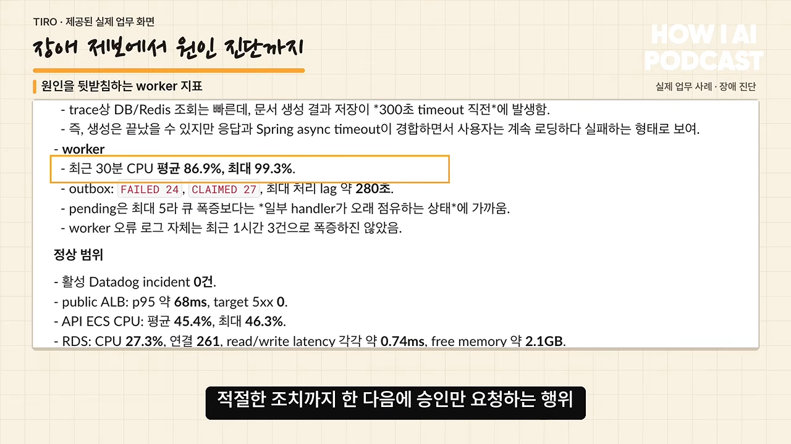
고객 문의도 같은 방식이에요. 새 문의가 들어오면 에이전트가 고객 이력과 이전 이메일을 조회하고 답변 초안을 써요. 화면 위쪽에는 고객 목적과 환경, 가설을 정리한 메모가 있고, 노란 테두리 안이 실제로 보낼 답변 초안이에요.
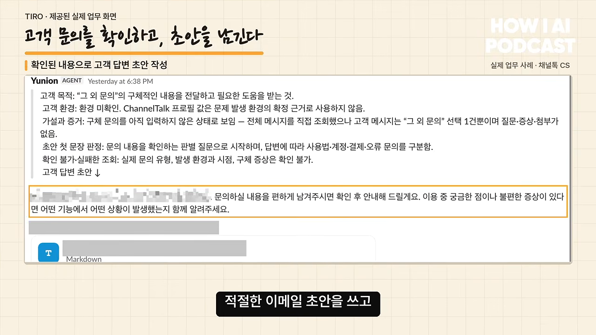
장기 목표는 사람이 워크플로에서 조금씩 빠지고, 티로라는 회사의 98% 정도를 AI로 시뮬레이션할 수 있는 상태예요.
시작은 병목 하나였어요
계기는 두 가지였는데, 영상에서 자세히 나온 건 하나예요. 중요한 B2B(Business to Business) 업무를 맡은 팀원 한 명이 아예 다른 시간대로 이주해서, 그 사람 의견 없이는 진행이 어려운 일이 생겼어요. 그런 일은 업무 규칙과 보고 있는 데이터, 일반적인 지능만 있으면 할 수 있다고 봤어요. 고유한 경험을 가진 지적인 주체가 조직의 규칙을 지키며 일한다고 생각하면, 이 둘을 잘 나눠 주기만 하면 사람과 거의 비슷하게 행동하게 만들 수 있다는 거예요.
에이전트를 이루는 세 층
그래서 에이전트를 세 층으로 쌓아요. 첫 번째는 말투 층이에요. 레오 님의 6개월~1년 치 슬랙 메시지를 여러 에이전트에 통과시켜 SOUL.md 파일 하나를 만들어요. 아래 슬라이드 왼쪽 '슬랙 메시지 6개월~1년'이 재료이고, 가운데 '여러 에이전트'가 기록을 분석해 정리하고, 오른쪽 SOUL.md에 말투·개입 시점·물러날 시점이 체크돼 있어요.

두 번째는 위키 층이에요. 레오 님이 평소 즐겨 보는 자료가 들어가요. 투자를 좋아하면 FedWatch 같은 자료가 들어갈 수 있어요. 레오 님이 나누는 대화도 다 티로로 기록되니, 그 기록을 CLI로 연결해 LLM 위키에 넣어요. 세 번째는 온톨로지 층이에요. 어떤 규칙으로 고객을 응대하고 어떤 규칙으로 B2B 세일즈를 하는지처럼, 레오 님이 아니어도 조직이 지켜야 하는 규칙을 회사 공용으로 둬요.
미호와 겨울이 하는 일
미호: 일본 B2B 맥락을 이어 주는 에이전트
레오 님이 1년 가까이 일하며 가장 많이 쌓은 맥락은 일본 B2B예요. 미팅 기록, 일본어 메일, 직접 쓴 계약서가 다 미호에게 넘어가 있어요. 특히 외국어 메일은 톤이 중요해요. 일반 AI로 쓰면 동료들이 믿지 못하고 레오 님에게 '이거 맞아요?' 하고 다시 물었어요. 그래서 레오 님은 그 규칙을 미호에게 정의해 줬어요. 지금은 미호에게 물으면 고객에 따라 어떤 매너로 답할지, 일본어 경어를 어떻게 쓸지 제안하고, 그대로 보낼 수 있는 초안까지 줘요. 일본 기업의 결제나 계약 방식이 한국 기업과 다른 점도 쌓여 있어요.
아래 슬라이드가 그 효과를 요약해요. 왼쪽 '업무 맥락(일본 B2B의 대응 기록)'이 가운데 '미호'를 거쳐 오른쪽 '다음 담당자'에게 이어져요. 실제로 유나 님이 일본에 가면서 일본 B2B를 맡고 레오 님은 한국에 집중하게 됐는데, 따로 인수인계하지 않아도 유나 님이 미호에게 물어보면 해결됐어요.
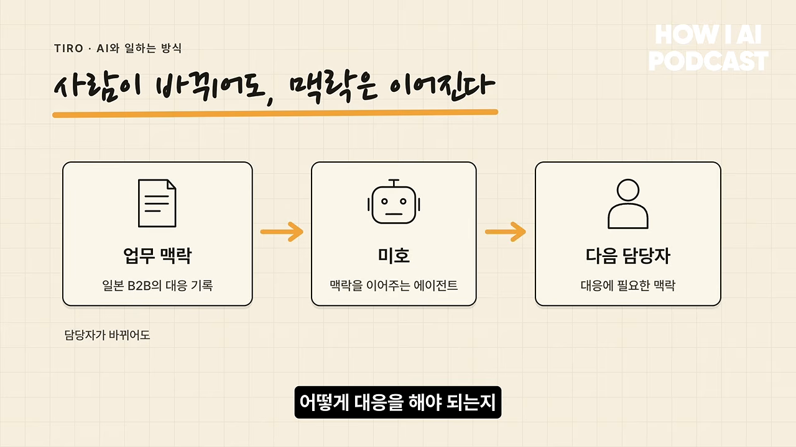
겨울: 먼저 하면 안 되는 일부터 정했어요
여울 님은 회사에서 권한이 많은 편이라, 겨울을 만들 때 '무엇을 하면 안 되는가'부터 정리했어요. 쿼리를 실행하거나 상태를 바꾸거나 환불해 주는 요청이 오면, 요청한 사람의 슬랙 ID를 보고 먼저 걸러요. 슬라이드의 세 칸 '실행 요청 → 요청자 확인(Slack ID) → 실행 권한 판단'이 그 순서예요.
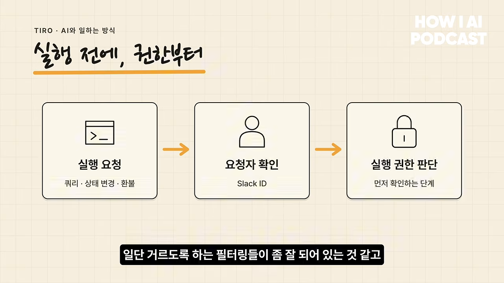
개인 비서로서 겨울은 새벽 5~6시 사이에 리포트를 두세 개 보내요. 여울 님이 자는 동안 회사에 있었던 일과 참고 자료, 그리고 오늘 캘린더에 있는 미팅과 거기 엮인 사람들의 지난 티로 노트를 보고 '오늘은 이것까지 준비해서 가야 한다'는 브리핑이에요. 영상에는 그중 하나인 주간 마케팅 리포트가 나와요. 노란 테두리 안이 검색 노출 131,359회, 클릭 6,482회, 평균 순위 6.4위 같은 SEO(Search Engine Optimization) 핵심 지표이고, 오른쪽에는 AEO(Answer Engine Optimization) 점검 항목이 이어져요.
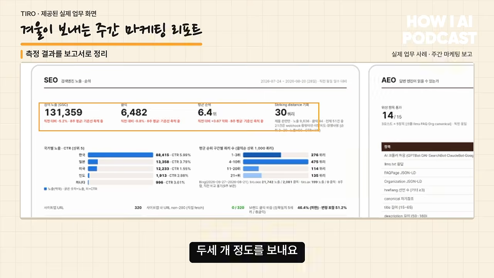
팀 일도 맡아요. 티로는 최근 보안 인증 두 개를 받았는데, 이를 유지하려면 권한 점검이나 감사 보고서 작성 같은 일을 주기적으로 해야 해요. 어떤 주기에 어떤 규칙과 흐름으로 해야 하는지가 티로 온톨로지에 들어 있고, 겨울이 이를 정기적으로 확인해 '지금 정책 점검할 때예요'라고 알려 줘요.
초안은 에이전트, 검토는 사람
여울 님이 요즘 가장 많이 쓰는 일은 대기업의 보안성 검토예요. 티로 도입을 검토하는 회사가 160개, 200개 항목짜리 질문지를 보내는데, 대부분 비슷한 내용을 다르게 표현한 거예요. 겨울이 온톨로지에 정의된 내용에 맞춰 답을 조합하고 필요하면 번역해서 초안을 쓰면, 여울 님은 쓱 훑어보며 이상한 데가 없는지만 봐요. 슬라이드의 '규칙 참조 → 초안 작성 → 사람 검토'가 이 순서예요.
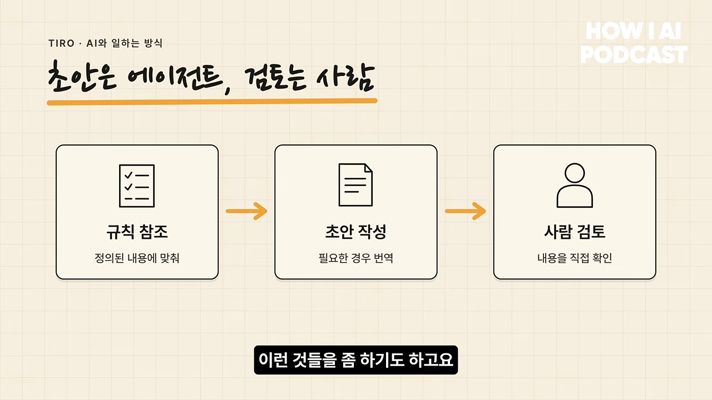
법률 검토도 맡기기 시작했어요. 100% 믿을 수는 없으니 여울 님이 내용을 충분히 이해한 뒤 변호사에게 자문을 받아요. 그래도 '이만큼 알아보고 이런 초안을 써 봤는데 문제가 있는지 봐 달라'고 가져가면 수임 시간이 줄어든다고 해요.
도구는 달라도 규칙은 한곳에서
진행자가 클로드 코드 같은 도구를 터미널에서 직접 쓰는지, 슬랙에서 봇을 부르는지 물었어요. 답은 둘 다예요. 왼쪽 세 칸 '개인 봇', 'Claude · Codex', '터미널'이 구성원마다 다른 접근 방식이고, 모두 오른쪽 '공용 규칙(Tiro 온톨로지 레포)'으로 모여요. 규칙을 따르거나 고칠 때는 무조건 이 레포를 거치게 정해 뒀어요. 반대로 LLM 위키는 에이전트마다, 여울 님의 세션마다 따로 구성돼 있어요.
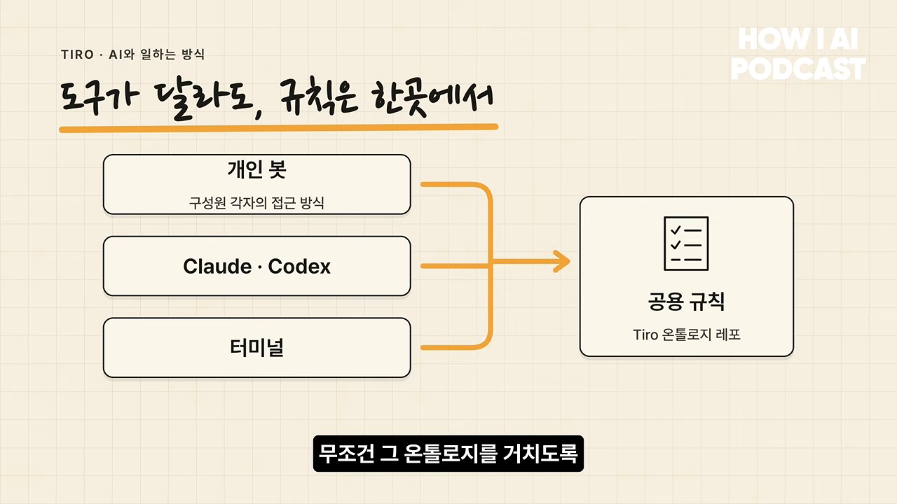
온톨로지는 언제 필요할까요
진행자가 '온톨로지를 쓸 때와 개인 에이전트를 쓸 때를 어떻게 나누느냐'고 묻자, 여울 님은 먼저 온톨로지라는 말부터 짚어요. 티로 온톨로지가 학문적으로 엄격한 온톨로지냐고 하면 아니라고 해요. 여울 님이 말하는 온톨로지는 팔란티어가 정의한 것을 따르기 때문이에요.
팔란티어식 온톨로지의 다섯 요소
여울 님의 정의는 데이터, 로직, 액션 세 가지와 그 위의 두 가지예요. 하나는 로그를 잘 남기는가(감사), 다른 하나는 누가 접근할 수 있는가(권한)예요. 슬라이드에서 가운데 세 아이콘이 데이터·로직·액션이고, 이를 감싼 테두리 위쪽 '감사 로그 · 변경 기록', 아래쪽 '접근 권한' 꼬리표가 나머지 두 요소예요. 진행자는 '엔티티와 관계' 정도로 생각했다며 정의가 다르다는 데 놀라요.
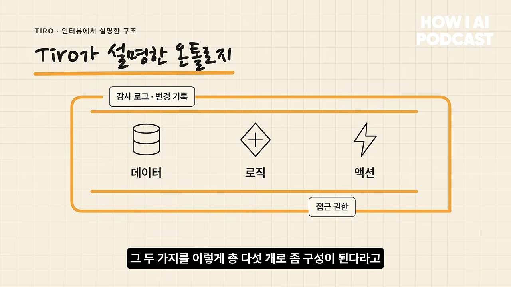
온톨로지가 필요한 기준
기준은 두 가지예요. 이걸 절대 틀리면 안 되는가, 그리고 엄격하게 적을 수 있는 워크플로·정의·언어가 있는가. 이메일 쓰기를 온톨로지에 넣는 건 상상이 잘 안 된다고 해요. 이메일은 적당히 할루시네이션이 섞여도 괜찮고, 오히려 도움이 될 때도 있어요. 하지만 발주를 넣거나 계약서에 금액을 쓰는 일은 바뀌면 안 되고, 조직 안에서 사람마다 다르게 말해서도 안 돼요. 그런 것만 온톨로지로 정의해요.
| 질문 | 예 | 어디에 두나요 |
|---|---|---|
| 틀려도 괜찮고, 사람마다 표현이 달라도 되나요? | 이메일 쓰기 | 프롬프트, LLM 위키와 모델의 지능으로 충분 |
| 절대 틀리면 안 되고, 모두 같은 뜻으로 써야 하나요? | 발주, 계약서 금액, MRR(Monthly Recurring Revenue) 기준 | 온톨로지로 승격 |
출발점은 MRR이라는 말 하나
티로에서 처음 문제가 된 건 MRR을 재는 기준이었어요. 사람마다 '한국 기업 MRR이 얼마냐'를 다르게 말하고 있었어요. 일본 사람이 일본에서 결제해 팀에 들어오면 일본 MRR이 확실해요. 그런데 슬라이드처럼 한국에서 도입한 일본인이 일본 팀원 11명을 데려오면, 그 매출은 오른쪽 두 칸 중 어디에 넣어야 할까요? 슬라이드 아래 줄 '같은 질문, 다른 기준 → 공통 정의 필요'가 결론이에요.
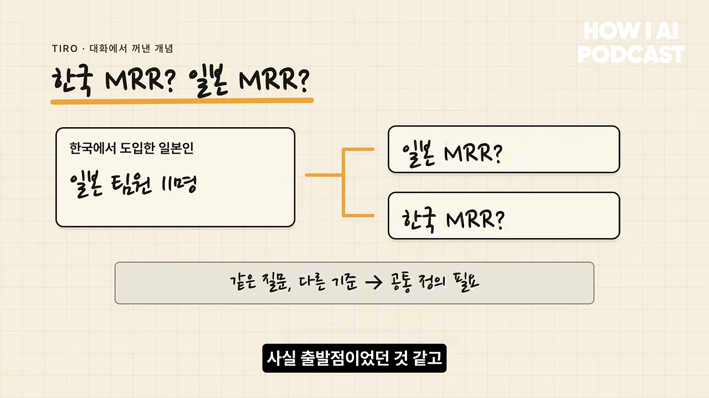
창고로 보는 다섯 요소
레오 님은 온톨로지를 설명할 때 창고를 예로 들어요. 같은 창고라도 회사마다 중요한 데이터가 달라요. 슬라이드 왼쪽 '창고를 칠하는 기업'에는 색깔이 중요하고, 오른쪽 '물건을 적재·판매하는 물류회사'에는 색깔은 흐리게 빠지고 크기와 물건의 종류가 강조돼 있어요. 아래 줄 '업무 목적에 따라, 필요한 데이터가 달라진다'가 데이터 층의 뜻이에요.
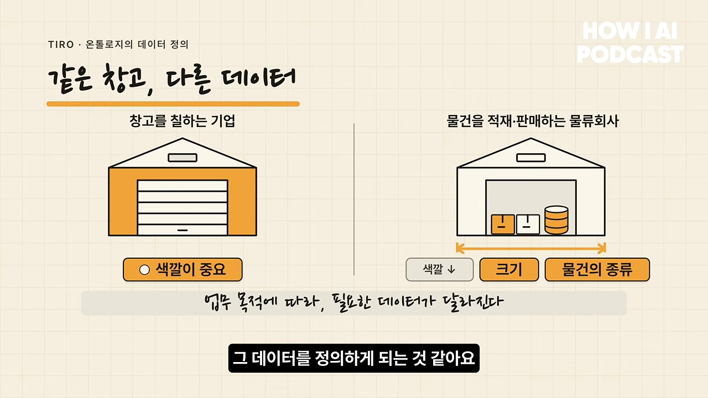
나머지 요소는 말로 이어져요. 로직은 '우리 조직이 이 창고를 비었다고 말하는 기준'이에요. 정말 아무것도 없어야 비었다고 하는 사람도 있고, 천 개가 들어가는 창고에 한두 개만 있으면 비었다고 하는 사람도 있어요. 액션은 비었을 때 무엇을 하느냐예요. 그리고 아무나 창고를 채우거나 빼면 안 되니 권한 관리가 필요하고, 1년 뒤에도 누가 접근했는지 추적돼야 하니 감사가 필요해요. 이 다섯 가지를 다 갖출 만큼 중요한 언어일 때만 온톨로지로 정의하고, 아니면 LLM 위키와 충분히 똑똑한 모델로 충분하다고 봐요.
왜 다들 온톨로지를 말할까요
여울 님은 온톨로지가 마케팅 용어처럼 쓰인다고 봐요. AI와 AX에 대한 조급함이 커지면서 사람들이 정답이 있다고 믿고, 프레임워크 하나를 회사에 들이는 데 집착한다는 거예요. 여울 님이 보는 AX의 핵심은 회사가 풀 문제를 명확히 정의하고 AI로 어떻게 풀지 정하는 일이에요. 진행자는 다른 시각을 내놓아요. 회사마다 맥락이 다르고, AI가 그 맥락에 맞춰 일하게 하려면 합의된 정의가 필요하니 온톨로지가 주목받는다는 거예요.
온톨로지를 만드는 법과 프리 온톨로지
진행자가 '회의록 서비스가 데이터·로직·액션을 어떻게 잡아낸다는 거냐'고 묻자, 여울 님은 기술보다 언어 이야기부터 해요. 온톨로지의 가치 중 하나가 언어를 정하는 일이고, 그 과정 자체가 조직에 큰 가치를 만든다는 거예요.
알아서 하던 일을 말로 바꾸기
온톨로지를 제대로 정의하려면 암묵지로 알아서 잘하던 일을 언어로 표현해야 해요. 그냥 받아서 처리하던 일을 어떤 규칙으로 처리했는지, 상황이 달랐다면 어떻게 했어야 하는지를 적어야 하죠. 영상도 이 대목에 아래 자막을 크게 띄워요.
만드는 방법은 단순해요. 각자 하는 일을 최대한 자세히 업무 규칙으로 풀어 써서 올려요. 처음부터 엄격한 객체 형태일 필요도 없어요. '네가 하는 일을 다른 사람이 와서 그대로 할 수 있게 써 봐'면 충분해요. 그렇게 모으면 공통 개념이 보이고, 같은 말을 다르게 쓰는 곳도 드러나요. 아래 슬라이드의 두 상자 '너의 업무에서 고객'과 '나의 업무에서 고객' 사이에 물음표가 있는 게 바로 그 순간이에요.
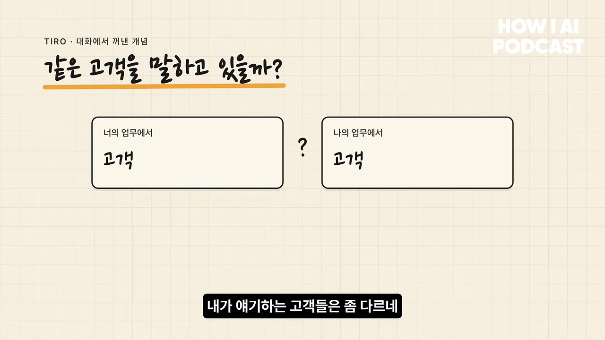
그래서 구축 자체는 기술적으로 어렵지 않다고 해요. 기술적으로 고민할 건 감사를 어떻게 남기고 누가 접근할 수 있게 할지 정도예요. 오히려 먼저 정의할 건 '레오 님이 하는 B2B 콜을 AI가 하려면 어떤 규칙을 줘야 하는가'예요. 여울 님의 기준은 이래요. 똑똑하지만 이 도메인을 전혀 모르는 팀원에게 문서 하나를 주고 한 달 휴가를 떠나는데, 마음이 편하려면 그 문서에 무엇이 적혀 있어야 할까요?
프리 온톨로지는 온톨로지가 아니에요
진행자가 티로가 내세우는 프리 온톨로지를 묻자, 여울 님은 먼저 선을 그어요. 프리 온톨로지는 온톨로지가 될 수 없다는 게 자신의 생각이라고 해요. 온톨로지는 '이것만 하면 알아서 만들어진다'가 아니라, 의사 결정자가 '우리는 앞으로 이걸 이렇게 말할 거야'라고 찍어 줘야 하는 것이기 때문이에요. 최종 결정은 사람이 내려요.
프리 온톨로지라는 말은 대화 기록 서비스가 줄 수 있는 가치를 설명할 언어가 없어서 만들었고, 마케팅 의도가 있었다는 것도 인정해요. 배경은 이래요. 에이전트가 코딩에서 먼저 두각을 나타낸 건 엄청난 양의 컨텍스트와 하네스 덕분이었어요. 클로드 코드는 수많은 예시 코드에 우리 코드베이스와 규칙까지 통째로 받고, CI(Continuous Integration)가 통과하면 성공이라는 기준도 분명해요. 비즈니스에도 이런 게 필요한데, 구조가 달라서 언어와 규칙이 필요하고, 그 재료를 대화 기록 서비스가 줄 수 있다고 본 거예요.
관계와 출처만 있으면 돼요
다만 전체 녹취록이나 요약본을 그대로 넣는 방식으로는 안 된다고 해요. 최소한의 관계가 필요해요. 아래 슬라이드처럼 '김상철'과 '빌더조쉬'가 언제, 어떤 관계로 대화를 시작했는지, 그 대화 기록이 어디 있는지(출처 확인)만 있어도 충분할 수 있어요. 이런 관계가 있으면 자기가 참여하지 않은 대화에서도 어떤 개념이 조직에서 어떤 관계로 쓰이는지 이해할 수 있어요.
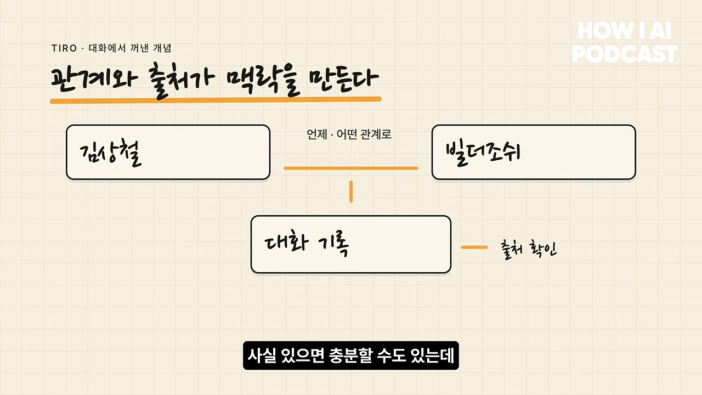
티로도 내부 온톨로지를 만들 때 티로를 많이 써요. '우리는 장애를 어떻게 정의하고 있지?'라는 질문에 티로 노트에서 장애 관련 대화를 뽑아 보니, 서버 장애뿐 아니라 고객 CS(Customer Service)로 들어온 문제도 장애라고 부르고 있었어요. 슬라이드에서 왼쪽 '대화 기록'이 '서버 장애'와 '고객 CS' 두 갈래로 나뉘었다가 오른쪽 '정의 검토'로 모이는 흐름이에요. 온톨로지를 정하기 직전의 이 단계를 돕겠다는 게 프리 온톨로지의 뜻이에요.
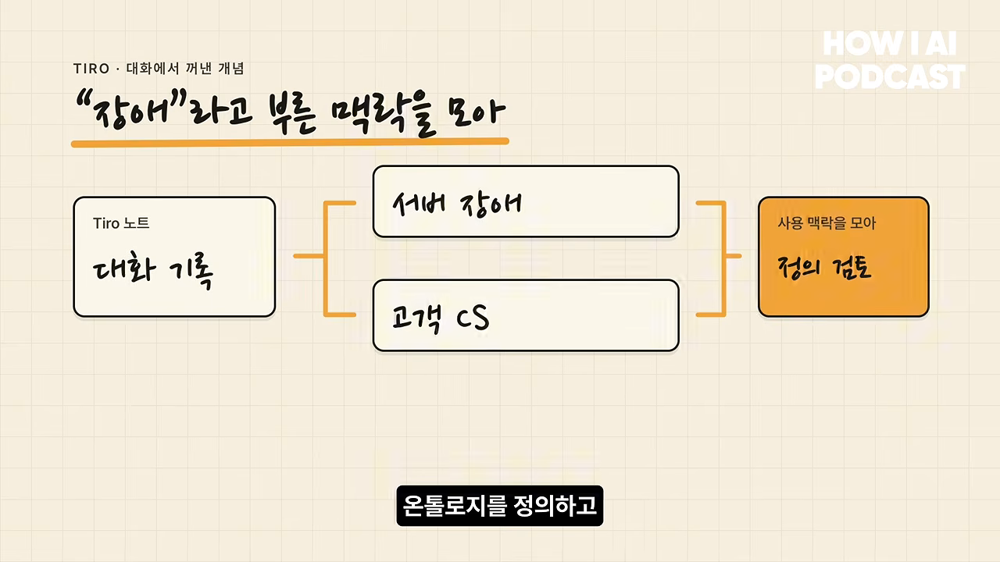
온톨로지는 레포 하나예요
여울 님은 화면을 공유해 실제 온톨로지를 보여 줘요(영상에서는 화면이 거의 나오지 않아요). 티로 온톨로지는 레포 하나이고, 엔지니어링이나 그로스처럼 도메인별로 나뉘어 있어요. 내용은 YAML 파일로, 예를 들어 'B2B MRR'이라면 설명과 어떤 쿼리로 가져오는지 같은 규칙이 모여 있어요. 팔란티어처럼 엄격한 규칙이 아니라, 팀원이 자기 업무 규칙을 에이전트와 동료가 이해하기 쉽게 나눴는지를 보고 만들기 때문에 계속 바뀌어요.
업데이트는 에이전트가 직접 하기도 하고, 사람이 '이 규칙을 추가해야겠다', '이건 폐기해야겠다' 하고 하기도 해요. 그래서 PR(Pull Request)이 생각보다 많아요. 여울 님은 PR을 하나하나 다 보지는 않고, 일주일에 한 번 전체 린트를 돌려 규칙이 어긋난 게 있는지 봐요. CTO로서 회사에서 벌어지는 오작동을 다 이해하고 있어야 하기 때문이에요. 진행자도 여울 님도 작은 팀이라 가능한 구조라고 말하고, 앞으로는 팔란티어 온톨로지에 더 가까운 방식으로 옮겨 가려 한다고 해요.
에이전트를 어떻게 믿을까요
답마다 근거 로그를 남겨요
여울 님이 보여 주고 싶었던 건 도구 호출 부분이에요. 아래는 #b2b-deal 채널 스레드로, 동료 Ahrin이 엔터프라이즈 계약서 관련 페이지 수정을 부탁하며 @yeoul을 멘션하자 여울 님의 에이전트 gyeoul(겨울)이 보안 정책 페이지 같은 근거 자료를 붙여 답한 장면이에요. 화면 대부분은 흐리게 처리돼 있고, 아래쪽 Tiro 보안 페이지 링크(Okta 기반 SSO(Single Sign-On)와 SCIM(System for Cross-domain Identity Management) 지원 문구)만 읽혀요.
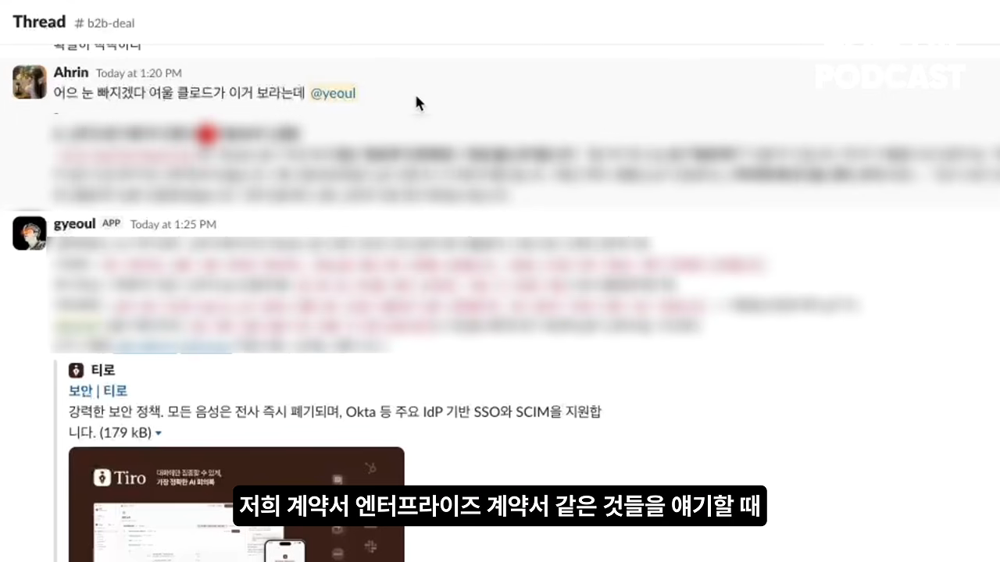
여울 님이 이 답을 믿는 방식은 이래요. 일반 지능은 대부분 분야에서 자신보다 뛰어날 테니, 답의 내용보다 '어떤 도구와 위키를 가져왔고, 어떤 스킬로 어떤 기준에 따라 결정했고, 실제로 한 번 검증했고, 어떤 온톨로지를 보고 결론을 냈는지'를 봐요. 에이전트는 이 로그를 항상 남겨요.
에이전트가 자율적으로 움직이는 걸 믿으려면 정해진 샌드박스 안에서만 움직인다는 믿음이 있어야 해요. 한두 번 해 보니 잘한다고 100만 번 단위로 늘려 버리면, 사고가 날 확률은 통계적으로 1에 가까워진다는 게 여울 님의 말이에요.
로그는 대화 안에 보여야 봐요
평가는 어떻게 하느냐는 질문에는 두 가지로 답해요. 하나는 평가하는 사람 자체를 '슈퍼휴먼'으로 만든다는 철학이에요. 다른 하나는 그래서 슬랙 기반 인터페이스를 고집한다는 거예요. 로그를 어딘가에 쌓아 두고 '일주일에 한 번 어드민에서 확인하세요'라고 하면 아무도 안 봐요. 대화 흐름 안에 바로 보이면 누가 봐도 이상한 답은 쓱 보고 고칠 수 있어요. 여울 님도 100% 다 보지는 않는다고 솔직하게 말해요. 그래도 슬라이드처럼 '계약' 같은 중요한 내용은 반드시 직접 검토해요.
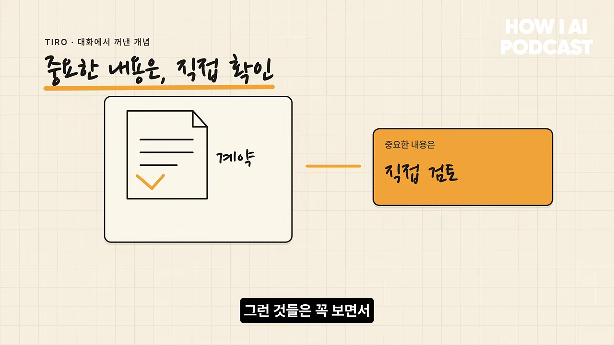
느린 구간이 전체 속도를 정해요
에이전트를 점점 많이 쓸 때 조직의 성장은 어디서 막힐까요? 여울 님은 최근 다시 떠올린 조화 평균으로 설명해요. 200km를 두 사람이 100km씩 이어 달려요. 슬라이드 왼쪽 첫 구간은 시속 100km라 1시간, 오른쪽 다음 구간은 시속 1km라 100시간이 걸려요. 아래에 적힌 대로 총 200km를 총 101시간에 달렸으니 평균은 시속 약 1.98km예요.
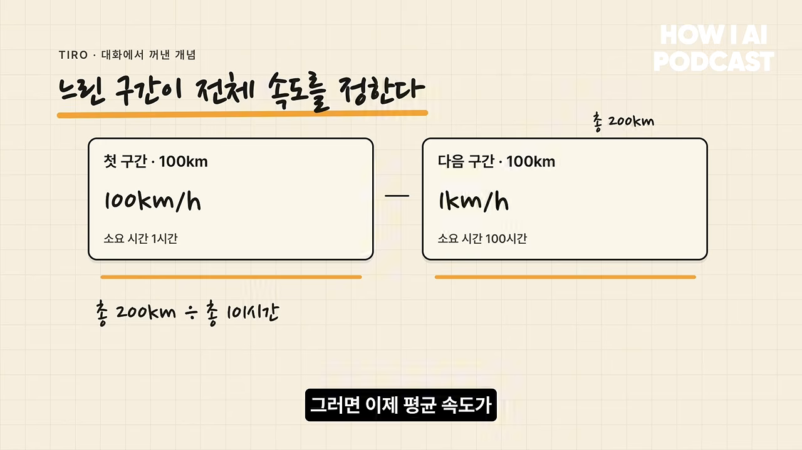
여기서 빠른 주자를 빛의 속도로 만들어도 전체는 시속 2km 언저리예요. 반대로 느린 주자를 시속 10km나 50km로 올리면 그때부터 전체 속도가 확 늘어요. 여울 님은 이 느린 주자가 바로 사람이라고 말해요. 아래에서 두 속도를 직접 바꿔 보면 어느 쪽을 올려야 전체가 빨라지는지 바로 보여요.
총 걸린 시간 0시간
전체 평균 속도 0km/h
각 구간은 100km, 전체 200km예요. 영상의 설정 그대로예요.
- 영상 설정(100km/h, 1km/h)에서 평균이 약 1.98km/h인지 확인해 보세요.
- 첫 구간을 1,000km/h까지 올려 보세요. 에이전트를 아무리 빠르게 해도 평균은 2km/h를 넘지 못해요.
- 첫 구간은 100km/h로 두고 다음 구간만 10km/h, 50km/h로 올려 보세요. 사람이 빨라질 때 전체가 크게 빨라져요.
그래서 에이전트를 더 잘 쓰고 하네스를 깎는 일도 중요하지만, 전체 가치는 느리게 달리던 팀원이 10km, 50km로 달리는 데서 나온다고 봐요. 더플레이토가 팀원의 일반 지능과 사고력, 문제를 정의하는 능력에 많이 투자하는 이유예요. 성과 평가에서도 중요한 기준이에요. 루프를 돌다 실패한 건 괜찮지만, 그 루프에서 배운 게 없으면 실망스럽다고 평가해요.
개인 에이전트가 바꾼 문화와 보안
업무별이 아니라 사람별로 만든 이유
여울 님은 사람 단위로 에이전트를 만든 게 문화적으로 아주 중요한 결정이었다고 말해요. CS 에이전트, B2B 에이전트처럼 업무별로 나누는 방법도 있어요. 그런데 그렇게 하면 주인이 불분명해지고, 권한 관리가 애매해지고, 그걸 관리하는 직무가 따로 생겨요. 사람별이면 '나를 대체하는 에이전트', 말하자면 내 포켓몬이 돼요. '레오의 포켓몬은 잘 싸우는데 내 건 왜 이 모양이야' 하며 더 열심히 할 동기가 생기고, 인센티브도 맞아떨어진다고 해요.
진행자 회사는 다섯 명이 에이전트 하나를 같이 쓰고 있어서, 사람마다 실력 차가 나면 어떻게 재느냐고 물어요. 답은 의외로 단순해요. 레오 님을 불렀는데 미호가 정말 잘하면 레오 님은 아예 나타나지 않고, 미호와의 대화로 일이 끝나요. 그걸 서로 체감하고 '얘는 어떻게 이렇게 대화를 잘해?' 하고 물어본대요.
좋은 패턴은 모두에게 한 번에
격주에 한 번은 다 같이 모여 '나는 회사에서 내 역할을 어떻게 20%씩 빼고 있는가'를 나눠요. 이야기하다 보면 공통된 좋은 패턴이 나와요. 슬라이드 왼쪽 '공통 패턴'에서 오른쪽 에이전트 세 개로 '공통 업데이트' 화살표가 동시에 내려가는 게 그 과정이에요. 여울 님이 주말에 한꺼번에 반영해요.
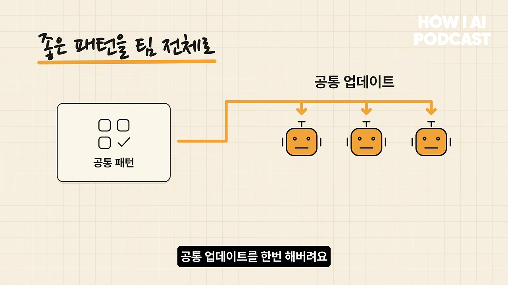
다른 팀원도 중앙 온톨로지에 PR을 올려요. 여울 님은 일주일에 한 번 규칙이 어긋난 게 없는지 린트를 돌리고, 최근에는 온톨로지 전용 린트도 만들었어요. 온톨로지는 회사의 공용 규칙이라 엄격하게 보지만, 에이전트는 사정이 달라요.
에이전트끼리는 서로 격리돼 있어요
에이전트가 고장 나면 그건 주인의 손해예요. 그래서 서로 격리해 뒀어요. 슬라이드에서 '미호' 아래 '오류 발생' 표시가 붙어 있어도, 가운데 '독립' 선 너머의 '겨울'은 멀쩡해요. 고장 나면 주인이 직접 고치고, 어려우면 여울 님에게 SOS(Save Our Souls)를 보내요.
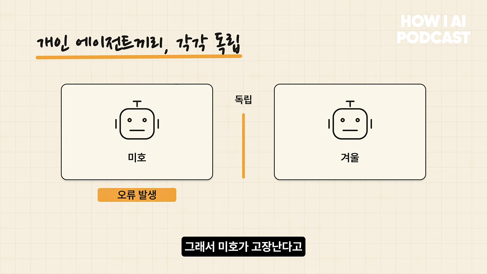
보안에 일찍 투자한 이유
격리 이야기는 보안으로 이어져요. 티로가 보안 인증을 서둘러 받은 이유는 두 가지예요. 첫째, 대화를 다루는 제품이라 민감한 정보를 다룰 수밖에 없어요. B2C(Business to Consumer) 고객은 '좋네, 쓰자'로 결정하지만 B2B는 '안 쓸 이유가 없으면 쓴다'에 가까워요. 보안성 검토를 못 넘거나 개인 정보가 해외로 나가는 게 아니냐는 의문을 못 풀면, 제품이 아무리 좋아도 안 돼요. 안정적인 매출 기반과 더 큰 기회를 얻으려면 B2B가 필요했고, 그래서 꽤 빨리 투자했어요. 둘째는 웃으며 한 말인데, 1년 내내 달려서 지친 여울 님에게 체크리스트만 따라가면 되는 보안 인증 작업이 회사에 있으면서 쉴 수 있는 시간이었대요.
레오 님이 현장에서 느낀 가장 큰 변화도 인증이에요. 전에는 일본이든 한국이든 '이것도 잘하고 저것도 잘한다'고 설명해도 계속 오갔는데, SOC(System and Organization Controls) 2와 ISO(International Organization for Standardization) 인증을 받은 뒤로는 그 말만 해도 어느 정도 깔고 들어가는 느낌이 있다고 해요. 그 밖의 보안성 검토는 여울 님이 아니라 겨울에게 많이 물어요. 고객이 두꺼운 엑셀 질문지를 보내오면 겨울에게 넘기고, 겨울이 본 뒤 여울 님이 한 번 더 검수해요.
대화를 자산으로: 저장하고 꺼내 쓰기
진행자가 요즘 집중하는 B2B AX 영업을 어떻게 하는지 묻자, 레오 님은 '자산'이라는 말을 쪼개서 설명해요. 티로를 '대화를 자산으로 만드는 제품'이라고 소개하면, 자산이란 무엇인지부터 고민하게 된다는 거예요.
자산의 두 층: 저장과 꺼내 쓰기
첫째, 자산은 안전하게 잘 저장할 수 있어야 해요. 둘째, 가치를 만들 때 꺼내 쓸 수 있어야 해요. 레오 님은 이를 스토어와 리트리벌이라고 불러요.
| 고객이 원하는 것 | 레오 님이 하는 설명 |
|---|---|
| 저장(스토어)만 잘되면 되는 고객 | 사내 모든 대화를 보고서든 표든 원하는 형태로 바꿔 컨플루언스나 구글 드라이브에 꽂아 드려요. 알아서 쓰시면 돼요. |
| 에이전트에 먹이고 지식 베이스를 만들고 싶은 고객 | '티로 안에서 다 하세요'가 아니라 '티로에서 꺼내 가세요'. 티로는 안전한 지갑이에요. CLI, MCP, API 무엇으로든 정확하게, 토큰은 적게 꺼내 갈 수 있어요. |
아직은 저장만 잘되면 돈을 내는 고객이 꽤 많다고 해요. 레오 님은 시장이 이제 막 얼리 어답터에서 얼리 머저리티로 넘어가는 중이라고 봐요. 꺼내 쓰기에 관심 있는 고객에게 '우리 플랫폼 안에서 다 하라'고 하는 건 너무 폭력적이라고 생각해서, 꺼내 가는 쪽으로 말을 바꿨대요.
위키는 맥락의 색인이에요
티로 위키는 꺼내 쓰기를 위한 개념이에요. 에이전트가 원하는 건 전체 스크립트가 아니에요. '김 부장이 무슨 프로젝트를 맡고 있고, 거기에 누구누구와 어떤 기업이 엮여 있는가'가 중요해요. 이걸 일반 노트 원문에서 다 가져오면 토큰을 너무 많이 쓰고 할루시네이션도 생겨요. 김 부장이라는 위키 페이지 하나를 가져오면 딸린 개념이 따라 나와요.
진행자가 품질은 무엇으로 입증하느냐고 묻자, 여울 님은 알렉산드리아 도서관에 비유해요. 아무 색인 없이 '셰익스피어 63페이지를 찾아 달라'고 해도, 시간과 지능이 충분하면 찾을 수는 있어요. 하지만 색인이 있으면 훨씬 정확하고 빠르죠. 슬라이드 왼쪽 '기록 더미'에서 가운데 '위키 · 색인'을 거쳐 오른쪽 '필요한 페이지'로 가는 흐름이 이 비유예요.
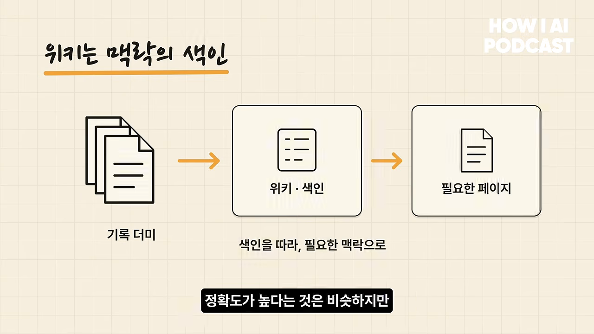
정확도가 높다는 건, 비슷해서 헷갈리지만 정답은 아닌 것들이 얼마나 덜 섞이느냐의 문제예요. 위키를 거치면 그런 것이 덜 들어가니 정확도가 올라간다는 논리예요. 토큰을 적게 쓰는 건 그 결과로 따라와요.
AI 시대 사람의 가치와 티로의 다음 단계
인공위성과 사람의 가치
마무리는 개인적인 이야기로 넘어가요. 여울 님은 인공위성을 띄우고 싶어 해요. 첫째 이유는 낭만이에요. 10억에 사서 300억에 팔겠다는 게 아니라, 나중에 아이에게 '방금 아빠 위성 날아갔어'라고 말하는 장면이 좋다고 해요. 둘째는 팔란티어에 투자하면서 파트너사들을 살펴보다 알게 된 위성 회사예요. 그 회사의 비전이 소버린 위성과 '검색 가능한 지구'였는데, 구글이 인터넷을 검색 가능하게 만들었듯 지구를 검색한다는 개념에 끌렸대요. 지금은 아내의 허락을 받아 옥상에 72cm 안테나와 동글을 달고, 이미 떠 있는 위성의 신호를 받아 해석하는 단계예요.
레오 님은 AI 시대에 자기 가치를 어디서 찾을지 고민해요. 티로에 오기 전에는 AI가 이만큼 발전한 줄 몰랐는데, 지금은 이전 회사에서 하던 일을 AI가 다 하고 자신은 명령만 내린다고 해요. 지금까지는 단위 시간에 얼마나 많은 가치를 만드느냐, 즉 생산성으로 자신을 평가하며 살았어요. 앞으로 사람은 생산성이 아닌 다른 가치로 평가받을 텐데, 그때 무엇을 내세우고 스스로 납득할 수 있을지 찾는 중이래요.
에이전트가 주요 사용자가 되는 세계
티로의 방향을 묻자 여울 님은 이사진과 합의한 내용은 아니고 날것의 생각이라고 먼저 밝혀요. 슬라이드 아래 작은 글씨 '개인적 구상 · 이사회 미합의 · 확정 로드맵 아님'도 같은 뜻이에요. 지금까지 유저 인터페이스를 말할 때 유저는 늘 사람이었어요. 여울 님은 곧 에이전트가 주요 유저가 되는 세계가 온다고 봐요. 에이전트가 대화를 녹음할 일은 없으니, 그들이 티로를 쓴다면 왼쪽 '대화 자산', 즉 티로가 잘 묶어 둔 자산을 쓸 거예요.
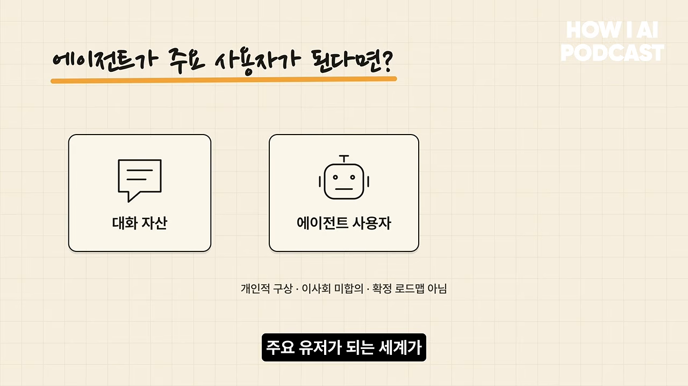
더 멀리는 회사 더플레이토와 제품 티로를 나눠서 생각한대요. 더플레이토 팀원들이 티로를 만들며 플라톤이 말한 철인에 한 걸음 가까워지는 것, 티로를 통해 무엇을 배우고 다음 방향을 어떻게 정할지가 고민이에요. 최근 연 팟캐스트 '플레이토 캐스트'도 제품 이야기보다 무엇을 추구하고 행복을 어떻게 정의할지를 다룬대요.
페이즈 2: 회의록을 에이전트가 읽어요
레오 님은 1~2년 안의 시장을 이야기해요. 마블 영화처럼 페이즈 1이 끝났으면 페이즈 2로 넘어가야 하는데, 그 페이즈 2는 회의록을 사람이 아니라 에이전트가 읽는 시기예요. 슬라이드의 '사람이 읽는 회의록 → 에이전트가 읽는 맥락'이 그 전환이에요.
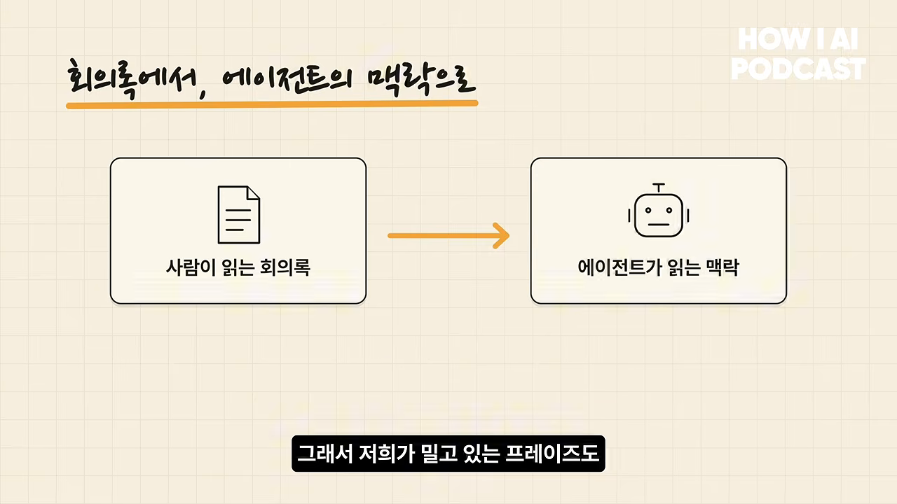
그래서 티로가 미는 문구도 'now your agent works'예요. 그동안 에이전트는 뻔하고 보편적인 답만 냈는데, 의사 결정의 90%가 대화에서 일어나니 그 대화를 완전히 이해한 에이전트를 쓸 수 있다는 뜻이에요. 레오 님은 AI 선두 주자들이 에이전트에 관심이 많지만 그 시대가 아직 다 오진 않았고, 지금 다가오는 중이라고 봐요. 티로는 웹뿐 아니라 데스크톱 앱, 모바일 앱, 최근에는 애플 워치 앱도 내서 어떤 상황에서든 대화를 기록할 수 있게 했다고 소개하며 대담을 마쳐요.